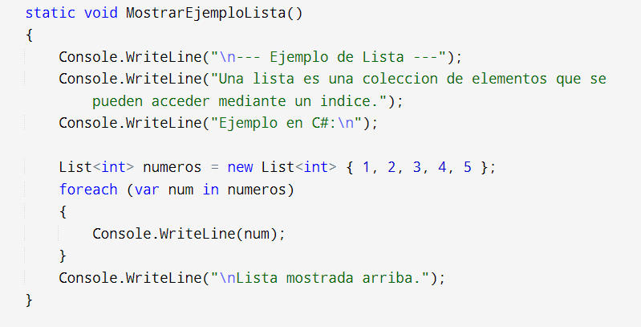

Concepto de lista
Una lista en programación es una estructura de datos que almacena una secuencia de elementos, que pueden ser de diferentes tipos, y permite operaciones como la inserción, eliminación y acceso a elementos.
